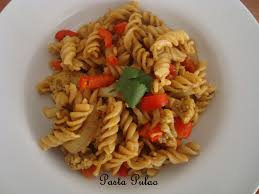

Pasta Pulao
Recipe by Chef Tahir Chaudhary

Ingredients
- Boiled spiral pasta 3 cups
- Water 1 cups
- Oil or ghee 2 tbspem>
- Cumin seed 1 tbsp
- Onion sliced 1 no
- Chopped tomatoes 1 cups
- potato 1 cup (peeled and fine chopped)
- Coriander powedered 1 tsp
- Garam masala powdered 1 tsp
- salt 1 tbsp
- Chilli powder 1 tsp
Instruction
- Boil pasta and drain well keep on a side.
- In a heavy pan, heat the oil and add the cumin and sliced onion
- When the onion becomes a light brown, add the tomatoes and potatoes, garam masala, salt and chili powder. Stir-fry till mix well.
- Add half cups of water, bring to a boil uncovered, then lower the heat to simmer and cover.
- When potatoes are cooked, add boiled pasta mix and cover on a very slow heat 3 to 5 minutes. Pulao is ready, serve hot.